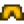
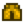
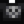
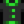

Calavera encantada
| Calavera encantada | |
 | |
| Información | |
| Aparece en: |
|
| Niveles: | Todos |
| Matable: | Si |
| PV base: | 160 |
| Daño base: | 15 |
| Defensa base: | 1 |
| Velocidad: | 3 |
| Puntos de XP: | 15 |
| Variaciones: | Calavera encantada (peligrosa) |
| Botín: |
 Pantalones bombachos grises (0.22%)  Pantalones poco estrechos grises (0.22%)  Camiseta de calavera (0.22%)
 Camiseta oscura con resaltos (0.22%) Solo en invierno: Si el lote de la caja fuerte se completó: Si el lote de la caja fuerte no se completó Si se alcanzó el fondo de las minas:
|
Las Calaveras Encantadas son un enemigo que se encuentra en la mina de cantera y en los niveles mazmorra de las minas.
Comportamiento
Su comportamiento es similar al de los murciélagos y las serpientes; pueden volar alejándose del jugador para cambiar la dirección de su ataque.
Tienen dos métodos de aparición:
- Pueden ser enemigos normales en el piso. Acercarse a ellos los activa, y atacarán al jugador desde ese momento.
- Pueden aparecer al azar. Emitirán un chirrido y se acercarán desde un punto aleatorio del exterior de la sala.
Estrategia
La mejor arma es un ataque normal de espada (no de maza ni de daga), debido a su amplio ángulo. Si es posible, conviene moverse en dirección contraria a la calavera, para que haya otro enemigo a su lado, y atacarlos a la vez.
Galería
Historial
- 1.4: Añadido.